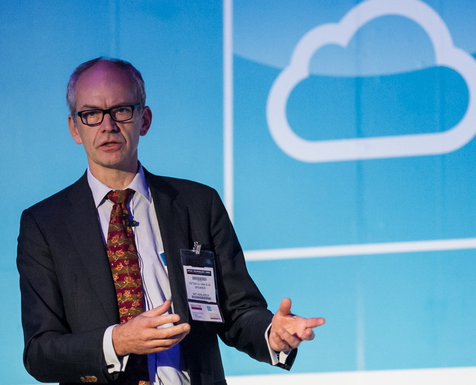

Innoveer veilig met cloud computing
Hoe maken we optimaal en veilig gebruik van de mogelijkheden van cloud computing?
Verbeter je IT dienstverlening door het toepassen van cloud modellen.
Leer in een workshop van 1 dag wat de voordelen en risico’s zijn van cloud computing. Daardoor weet jij waar de kansen ontstaan en hoe je tegelijkertijd minder risico loopt. Het is een inleidende, niet-technische workshop, geschikt voor (IT) professionals die werken met clouds.
Voor de eerstvolgende workshop zie de kalender voor meer mogelijkheden
Klik hier om meer informatie aan te vragen.
Problemen met cloud computing beleid
- Organisaties zien de kansen van cloud computing, maar lopen vast bij het formuleren van een effectieve strategie. Het hogere management stelt beleidsdoelen, maar hoe deze door de IT-afdeling en de business vorm moeten krijgen blijft volstrekt onduidelijk.
- Gebruikers en business sjouwen zonder veel overleg of beleid de ene na de andere cloud-applicatie naar binnen. Dat doet enigszins denken aan de manier waarop twintig jaar geleden de pc’s de bedrijven binnen kwamen. Maar of het veilig en bestuurbaar blijft, is nog maar de vraag.
- IT-afdelingen schaffen eigenhandig of gestimuleerd door hun leverancier een ‘private cloud’ aan. Maar vervolgens vraagt men zich af hoe het komt dat het niet wordt gebruikt.
- Ontwikkelaars komen er achter dat het ‘cloud native’ ontwikkelen van applicaties eenvoudig lijkt. Een creditcard voldoet immers om snel een leuke test en ontwikkelomgeving op te tuigen. Maar dan blijkt al snel dat een schaalbare, resilient en veilige cloud-architectuur nét wat meer voeten in aarde heeft dan gedacht. We hebben het dan nog niet over het operationele beheer van die omgeving of over hoe die applicatie als maximaal nuttig wordt ervaren door de (betalende) gebruikers.
Het kan ook anders

- Zorg dat je daadwerkelijk profijt hebt van cloud computing. Volg de koers van een bedrijf als Dell die volmondig heeft gekozen voor bijvoorbeeld SalesForce. Zelfs banken zijn niet vies van cloud computing.
- Zorg dat infrastructure cloud (IaaS) je flinke voordelen oplevert in de snelheid van ontwikkeling en uitrol. Zorg dat je een voorbeeld kunt nemen aan Netflix. Ze bieden online TV aan via de Amazon cloud, omdat ze niet kunnen wachten op de bouw van het volgende datacenter.
- Zorg dat je cloud computing ook inzet voor fundamentele product- en diensteninnovatie. Het integreren van informatiestromen over ketens heen maakt nieuwe samenwerking en hele nieuwe businessmodellen mogelijk.
- Zorg dat je, misschien paradoxaal, de cloud inzet om bestaande IT meer en meer veiliger te maken. Wie doet er bijvoorbeeld tegenwoordig zelf nog malware-filtering op de inkomende mail?
Om jou dit leren heb ik de Professional Cloud Consumer workshop ontwikkeld. Want uiteraard zijn er technische bijzonderheden aan cloud computing. Onder de motorkap zijn zeker innovaties aan te treffen. Maar wat belangrijker is, is dat cloud computing je leert om anders naar het leveringsmodel te kijken. Het is niet altijd makkelijk om los te komen van de bekende patronen waarmee IT wordt geleverd.
Wat ga je leren tijdens de workshop?
- Het kunnen toepassen van de essentiële kenmerken van cloud computing.
- Goed inzicht in de verschillende service modellen.
- Het kunnen afwegen van verschillende deployment modellen.
- Het kunnen inschatten van de nieuwe risico’s in relatie tot de voordelen.
- Het hebben van voorbeelden van succesvolle diensten en hun doelgroepen.
- Het kunnen uitleggen, of zelfs ontwerpen, van de business voordelen voor de klant/afnemer.
De Professional Cloud Consumer workshop geeft je in één dag inzicht in de essentie van cloud computing en stelt je in staat om de juiste keuzes in organisatie te maken. De workshop is niet gericht op de technische kant van cloud computing, maar juist op de strategie.
Wat zeggen mijn klanten?
~ Rogier Verheijen, IT manager, Antares, Nederland
De onderwerpen van de workshop
Afhankelijk van wat er in je organisatie speelt ga je
- een cloud strategie vertalen naar praktische initiatieven,
- de verschillende cloud modellen en hun kenmerken ontwarren,
- riskante cloud diensten leren herkennen,
- nut van private clouds onderscheiden,
- de cloud als doelplatform voor software-ontwikkeling bekijken.
Door de opzet van de workshop krijg je inzicht in de kenmerken en verschillende verschijningsvormen van cloud computing. Begrippen als Software as a Service, Platform as a Service en Infrastructure as a Service worden uitgelegd met voorbeelden en kenmerken. Ook wordt stilgestaan bij Public en Private cloud en de verschillende varianten hiervan. Hiermee leer je echte cloud-toepassingen te onderscheiden van de ‘cloud washing’ die sommige leveranciers zich denken te kunnen permitteren.
Aan de hand van uiteenlopende voorbeelden en opgaven wordt in de workshop geleerd om zelf cloud proposities te analyseren op voordeel en risico. De volgende fase is dat je gaat zien welke stappen je kunt zetten om je organisatie naar een optimaal cloud gebruik te leiden.
Tijdens de workshop is er natuurlijk ook ruimte voor vragen en cases van de deelnemers. Als aanmoediging om cloud computing goed in te zetten, krijg je na de workshop gratis toegang tot het besloten forum van clubcloudcomputing.com.
Wat kun jij verwachten bij de Professional Cloud Consumer workshop?
- Een workshop tijdens een ongedwongen dag op een aantrekkelijke centrale locatie
- Uitleg over cloud computing
- Uiteenlopende cases en voorbeelden
- Praktische oefeningen voor meer inzicht

Dr. Peter van Eijk
Coach, trainer, spreker en schrijver op het gebied van cloud computing en andere digitale infrastructuren.
- Tijd om je eigen vragen in te brengen
- Toegang tot het besloten forum van clubcloudcomputing.com voor extra kennisuitwisseling
De trainer
Mijn naam is Peter HJ van Eijk en ik ontwikkel en geef al meerdere jaren trainingen op het gebied van cloud computing. Trainingen geef ik over de hele wereld: Amerika, Azië, Midden-Oosten en Europa. Daarvoor heb ik organisaties geholpen bij de opzet en inrichting van hun digitale infrastructuren. Beveiliging en kostenopbouw speelden daarbij altijd een belangrijke rol. Ook publiceer ik regelmatig, waaronder een column in het vakblad Computable.
Investering
De 1-daagse workshop vergt een investering van slechts €495 excl. BTW. Boek snel!
Wanneer je met twee personen van dezelfde organisatie komt, mag er een derde persoon van de organisatie gratis mee.
De workshop wordt gegeven op een moderne locatie aan het Griftpark in Utrecht. De lunch is in een nabijgelegen restaurant. Dit is bij de prijs inbegrepen, evenals de verversingen gedurende de dag.

Garantie
Ik ben er totaal van overtuigd dat deze workshop aan je verwachtingen zal voldoen. In het onwaarschijnlijke geval dat dat niet zo is, hoor ik dat graag in de loop van de dag. Ik crediteer je dan per eerste gelegenheid (minus € 75 administratiekosten).
Inschrijven
Wanneer je je aan wilt melden voor deze inspirerende workshop, of een vraag aan mij wilt stellen, gebruik dan onderstaand formulier.
[contact-form-7 id=”1806″ title=”Inschrijving of vraag Cloud Business Innovation”]
Graag zie ik je binnenkort in Utrecht,
Peter HJ van EijkP.S. Meld je snel aan voor de workshop, zodat je gebruik kan maken van het voordelige tarief! Let op: het aantal plaatsen is beperkt. Je kan me ook bellen op 06 2268 4939.